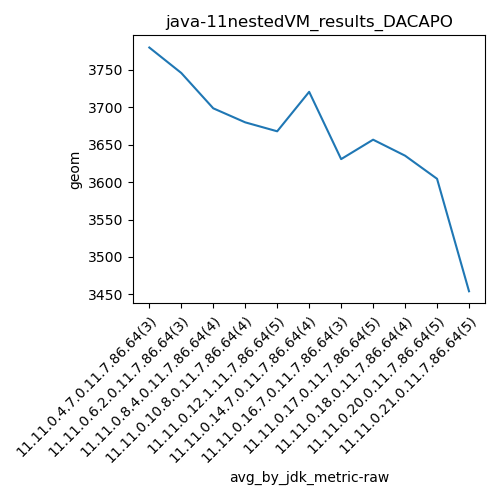

java-11 DACAPO
Context at bottom
/home/jvanek/git/benchmarks-in-nested-virtualisation-toolchain/final_results/nestedVM_results/nestedVM_results_DACAPO
java-11
DACAPO
nestedVM_results_DACAPO
final score
Expected number of java-11 JDKs: 7
1st avgmed_alljdks_metric:
/home/jvanek/git/benchmarks-in-nested-virtualisation-toolchain/final_results/result_processing.py /home/jvanek/git/benchmarks-in-nested-virtualisation-toolchain/final_results/nestedVM_results/nestedVM_results_DACAPO geom False
values: [3728, 3819, 3792, 3691, 3855, 3691, 3774, 3640, 3676, 3704, 3628, 3653, 3644, 3794, 3685, 3583, 3693, 3709, 3669, 3659, 3624, 3945, 3654, 3647, 3465, 3780]

Expected number of iterations: 5
final number of values: 26 out of 35
Pass rate: 74.3%
values: (3465, 3945, 3700.076923076923, 3691)

** accuracy from all jdks and runs
more is better
MIN: 3465
MAX: 3945
AVG: 3700.076923076923
MED: 3691
Relative differences 1:
MIN-MAX: 12.0 %
MIN-AVG: 6.0 %
MIN-MED: 6.0 %
MAX-MIN: -14.0 %
MAX-AVG: -7.0 %
MAX-MED: -7.0 %
AVG-MED: -0.0 %
stored to java-11.properties. sort | uniq that!
2nd avgmed_by_jdk_metric:
values: [3779.6666666666665, 3745.6666666666665, 3698.5, 3679.75, 3667.8, 3720.5, 3630.6666666666665]

values: [3792, 3691, 3704, 3653, 3685, 3659, 3647]

values: (3630.6666666666665, 3779.6666666666665, 3703.2214285714285, 3698.5)
values: (3647, 3792, 3690.1428571428573, 3685)

** accuracy from all jdks where runs were avged
more is better
MIN: 3630.6666666666665
MAX: 3779.6666666666665
AVG: 3703.2214285714285
MED: 3698.5
Relative differences 1:
MIN-MAX: 4.0 %
MIN-AVG: 2.0 %
MIN-MED: 2.0 %
MAX-MIN: -4.0 %
MAX-AVG: -2.0 %
MAX-MED: -2.0 %
AVG-MED: -0.0 %
stored to java-11.properties. sort | uniq that!
** accuracy from all jdks where runs were medianed
more is better
MIN: 3647
MAX: 3792
AVG: 3690.1428571428573
MED: 3685
Relative differences 1:
MIN-MAX: 4.0 %
MIN-AVG: 1.0 %
MIN-MED: 1.0 %
MAX-MIN: -4.0 %
MAX-AVG: -3.0 %
MAX-MED: -3.0 %
AVG-MED: -0.0 %
stored to java-11.properties. sort | uniq that!
/home/jvanek/git/benchmarks-in-nested-virtualisation-toolchain/final_results/nestedVM_results/nestedVM_results_J2DBENCH
java-11
DACAPO
/home/jvanek/git/benchmarks-in-nested-virtualisation-toolchain/final_results/nestedVM_results/nestedVM_results_RADARGUNs3
java-11
DACAPO
/home/jvanek/git/benchmarks-in-nested-virtualisation-toolchain/final_results/nestedVM_results/nestedVM_results_SPECJBB
java-11
DACAPO
/home/jvanek/git/benchmarks-in-nested-virtualisation-toolchain/final_results/nestedVM_results/nestedVM_results_RADARGUNs1
java-11
DACAPO
/home/jvanek/git/benchmarks-in-nested-virtualisation-toolchain/final_results/nestedVM_results/nestedVM_results_JMH
java-11
DACAPO
pass rates:
nestedVM_results_DACAPO=74.3%
Context:
- nestedVM_results
- DACAPO